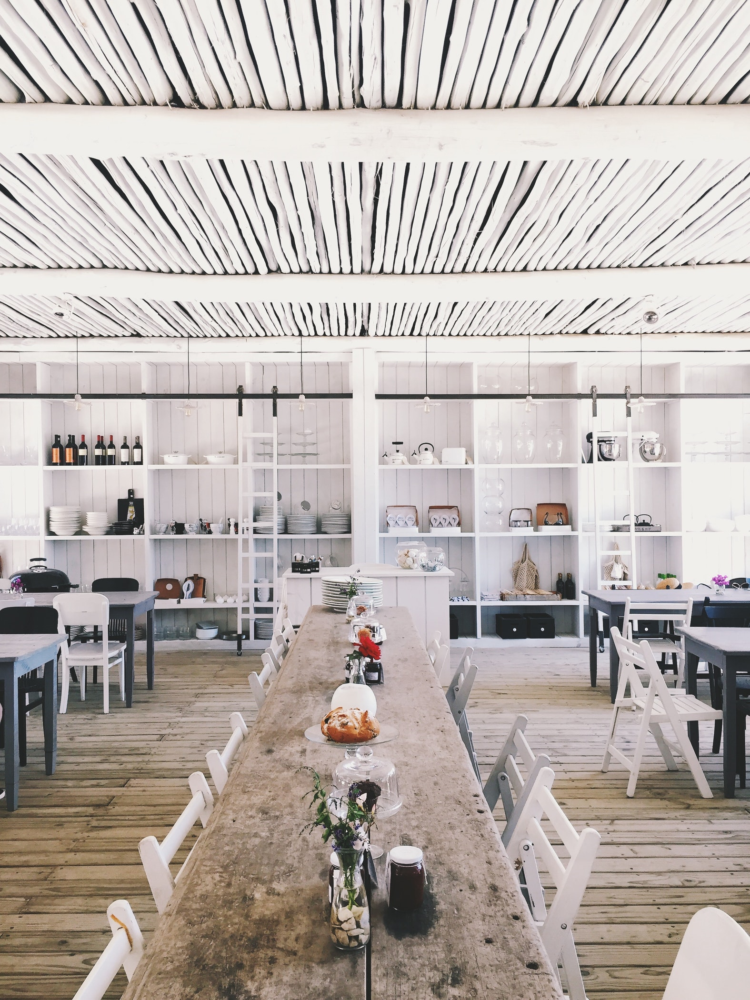
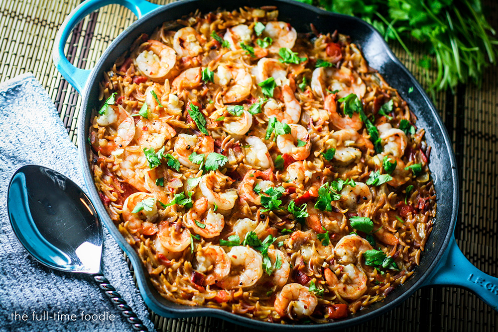

MENÚS
Entrantes
Duo de provolone (Trufa y virutas de jamón ibérico de bellota (5j) y sobrasada de menorca y miel) Carpaccio de ternera y escamas de parmesano y Ensalada Vino Tinto: Verde, salmón, ventresca de atún Ortiz, tomate de temporada, aguacate y queso de cabra con balsámico de higos
Primeros
Tagliata de entrecot con rúcula y parma, Morro de Bacalao con salsa de miel pasas y piñones y Steak tartar clásico
Segundos
Duo de canelones rellenos de foie y trufa, Solomillo de cerdo a la mostaza, Bacalao a la muselina de ajo con chips de verdura y Sashimi de salmón ahumado con un toque de miel, sésamo y salsa de eneldo.
Postres
Tarta tatín de manzana,Queso manchego curado con membrillo y Brownie de 3 chocolates con helado de vainilla.
Menú semanal de 40 €
Precio por persona (IVA incluido) y bebidas no incluidas. Se te solicitará una señal de 20 € directamente desde el restaurante para confirmar tu reserva.
OPINIONES

Enrique M.
El servicio bastante lento. La comida tanto los primeros para compartir como los provolone nada especial, al igual que los canelones que pedimos de segundo plato. La carne nada del otro mundo, muy normal todo. Es caro, calidad, servicio y precio no han estado a la altura de lo esperado.
3,5/10
Mariona V.
Muy bueno todo, volveremos.
6/10
Alba C.
Todo bueno. Justo lo que esperábamos encontrar de tantas veces que hemos ido a comer.
10/10
Antonio P.
Lo mejor la ensalada de vino tinto y la Tagliata.
7,3/10
PROMOCIONES
-35% en Cuenta final
Bebidas incluidas, menús no incluidos.Esta promoción se aplica sin consumo mínimo, ni restricciones de platos, para que comas y bebas lo que te apetezca y solamente prestes atención a disfrutar.
RECETAS

Fideua con gambas al estilo celler
Preparación
Paso 1/5
Pelar las gambas reservando cabezas y cáscaras. Limpiar los calamares y cortarlos en anillas. Pelar y picar los ajos. Lavar, retirar las semillas, el tallo y los nervios de los pimientos. Picar en daditos pequeños. Pelar, lavar y picar en daditos pequeños la cebolla. Majar el azafrán en el mortero con un poco de sal. Cocer juntos los ingredientes para el caldo de pescado 15 minutos y colar.
Paso 2/5
Colocar una paella con el aceite al fuego a calentar. Cuando está caliente rehogar el ajo, antes de que tome color, incorporar el pimiento y la cebolla muy picados. Seguir rehogando a fuego lento hasta que estén bien blandos. Añadir ahora el calamar y continuar rehogando 6 minutos más.
Paso 3/5
Fuera del fuego poner el pimentón y de nuevo en el fuego incorporar el tomate. Seguir rehogando 8 minutos más.
Paso 4/5
Bañar con el caldo de pescado y cuando esté hirviendo incorporar los fideos y las gambas. Cocer 5 minutos en el fuego y 5 minutos más en el horno.
Paso 5/5
Servir en la misma paella, adornando las asas con servilletas. Se puede acompañar de salsa alioli elaborada con aceite de oliva.
Ingredientes
- 200g gambas
- 300g calamar
- 2 dientes de ajo
- 1 pimiento verde
- 150g cebolla
- 1tsp pimentón
- 10 ramitas azafrán
- 1tbsp aceite de oliva
- 150ml de pescado
- 350g fideos nº3
VIDEOS
Como funciona nuestra cocina
Estuvimos a la hora del almuerzo, en medio de fogones, ollas y cocineros apasionados por lo que hacen. Bladimir Tovar, chef encargado de la cocina, fue el guía.